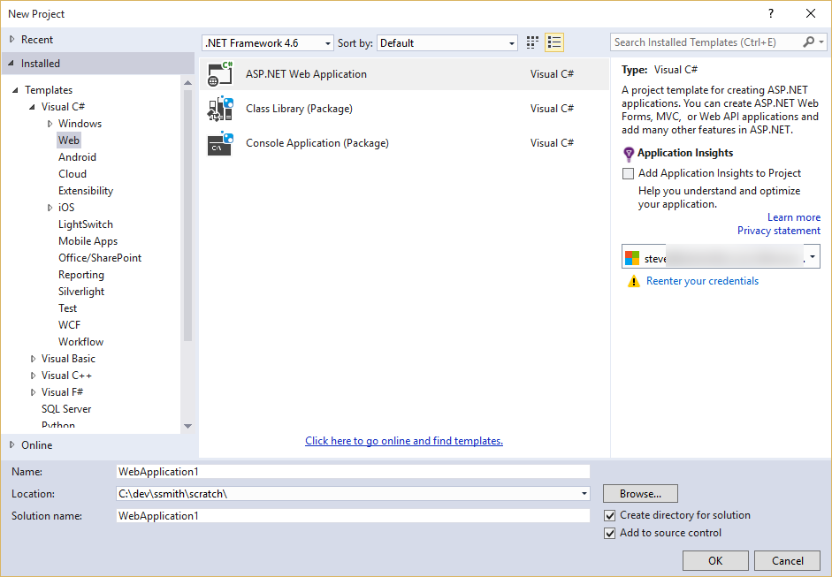
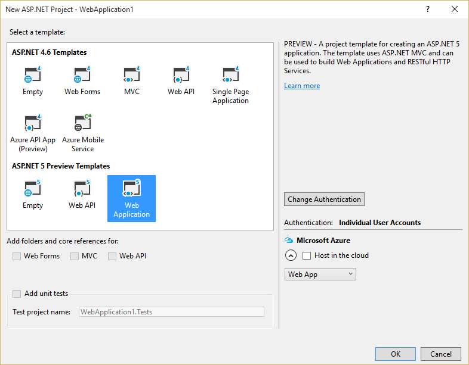
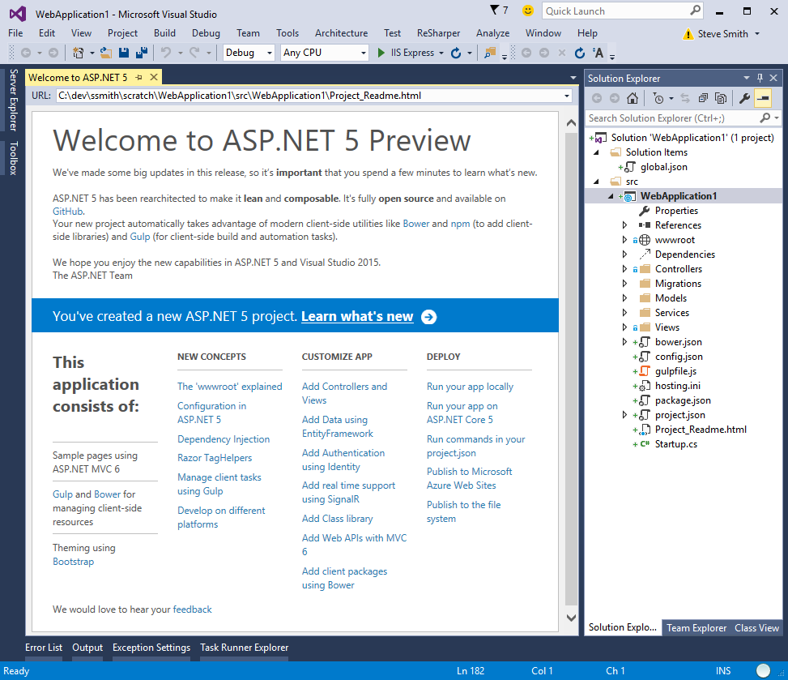
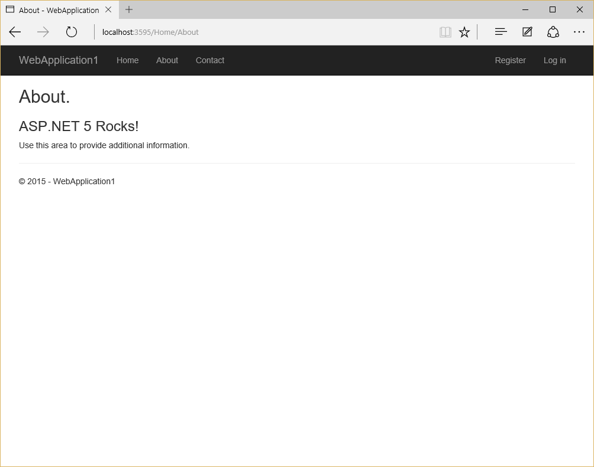
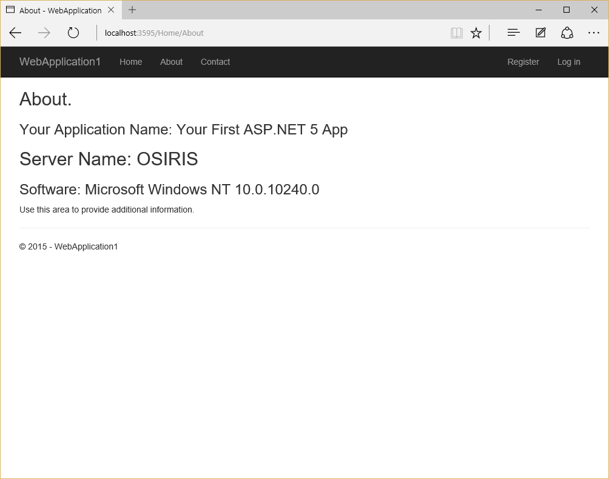
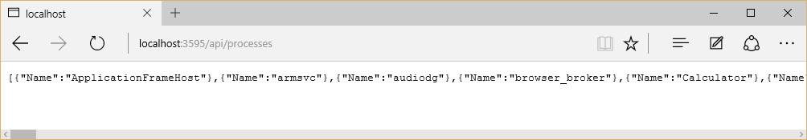
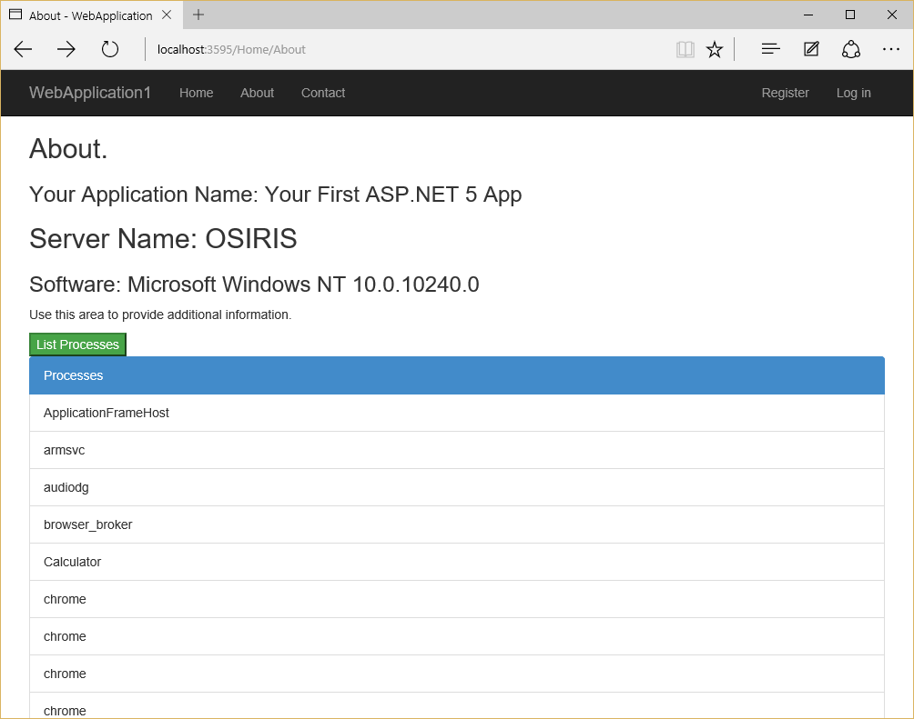

Your First ASP.NET 5 Application Using Visual Studio¶
By Steve Smith
ASP.NET 5 provides a host of improvements over its predecessors, including improved performance, better support for modern web development standards and tools, and improved integration between WebAPI, MVC, and WebForms. In addition, you can easily develop ASP.NET 5 applications using a variety of tools and editors, but Visual Studio continues to provide a very productive way to build web applications. In this article, we’ll walk through creating your first ASP.NET 5 web application using Visual Studio 2015.
- In this article:
View or download sample from GitHub.
Create a New ASP.NET 5 Project¶
To get started, open Visual Studio 2015. Next, create a New Project (from the Start Page, or via File - New - Project). On the left part of the New Project window, make sure the Visual C# templates are open and “Web” is selected, as shown:
On the right, choose ASP.NET Web Application. Make sure the framework specified at the top of the window is .NET Framework 4.6. Enter a name and confirm where you would like the project to be created, and click OK.
Next you should see another dialog, the New ASP.NET Project window:
Select the Web Application from the set of ASP.NET 5 Preview templates. These are distinct from the ASP.NET 4.6 templates, which can be used to create ASP.NET projects using the previous version of ASP.NET. Note that you can choose to configure hosting in Microsoft Azure directly from this dialog by checking the box on the right. After selecting Web Application, click OK.
At this point, the project is created. If you are prompted to select a source control option, choose whichever you prefer (for this example, I’ve chosen Git). It may take a few moments for the project to load, and you may notice Visual Studio’s status bar indicates that Visual Studio is downloading some resources as part of this process. Visual Studio ensures some required files are pulled into the project when a solution is opened (or a new project is created), and other files may be pulled in at compile time. Your project, once fully loaded, should look like this:
Looking at the Solution Explorer and comparing the elements with what we’re familiar with in previous versions of ASP.NET, a few things stick out as being new and different. There’s now a wwwroot folder, with its own icon. Similarly, there’s a Dependencies folder and still a References folder - we’ll discuss the differences between these two in a moment. Rounding out the list of folders, we have Controllers, Models, and Views, which make sense for an ASP.NET MVC project. This template also includes a Services folder, initially holding MessageServices used by ASP.NET Identity, and a Migrations folder, which holds classes used by Entity Framework to track updates to our model’s database schema.
Looking at the files in the root of the project, we may notice the absence of a few files. Global.asax is no longer present, nor is web.config, both mainstays from the start of ASP.NET. Instead, we find a Startup.cs file and an appsettings.json file. Adding to this mix are bower.json, gulpfile.js, package.json, and project.json (the Project_Readme.html file you can see in the browser tab). Clearly the success of Javascript in web development has had an effect on how ASP.NET 5 projects are configured, compiled, and deployed, with JavaScript Object Notation (JSON) files replacing XML for configuration purposes.
While we’re at it, you may not notice it from the Solution Explorer, but if you open Windows Explorer you’ll see that there is no longer a .csproj file, either. Instead you’ll find an .xproj file, an MSBuild file that serves the same purpose from a build process perspective, but which is much simpler than its csproj/vbproj predecessor.
Running the Application¶
Run the application (Debug -> Start Without Debugging) and after a quick build step, you should see it open in your web browser.
Click on the About link, and note the text on the page. Now, open the HomeController.cs file in the Controllers folder, and change the ViewBag.Message as follows:
ViewBag.Message = "ASP.NET 5 Rocks!";
Save the file and, without rebuilding the project, refresh your web browser. You should see the updated text. ASP.NET 5 no longer requires that you manually build your server-side logic before viewing it, making small updates much faster to inspect during development.
Server-Side vs. Client-Side Behavior¶
Modern web applications frequently make use of a combination of server-side and client-side behavior. Over time, ASP.NET has evolved to support more and more client-side behavior, and with ASP.NET 5 it now includes great support for Single Page Applications (SPAs) that shift virtually all of the application logic to the web client, and use the server only to fetch and store data. Your application’s approach to where its behavior resides will depend on a variety of factors. The more comfortable your team is with client-side development, the more likely it is that much of your application’s behavior will run on the client. If your web site will include a great deal of public content that should be discoverable by search engines, you may wish to ensure the server returns this content directly, rather than having it built up by client-side scripts, since the latter requires special effort to be indexed by search engines.
On the server, ASP.NET MVC 6 (part of ASP.NET 5) works similarly to its predecessor, including support for Razor-formatted Views as well as integrated support for Web API. On the client, there are many options available for managing client application state, binding to UI elements, and communication with APIs. Learn more about Client-Side Development.
Now we can add a bit of behavior to both the server and the client of the default application, to demonstrate how easy it is to get started building your own ASP.NET 5 application.
Adding Server-Side Behavior¶
We’ve already tweaked the behavior of the HomeController’s About method to change the Message passed to the View. We can add additional server-side behavior by further modifying the HomeController’s About action and its associated View. Then, we’ll enhance this basic information by adding some client-side behavior that makes API calls back to the server.
To start, add a new ViewModel class called ServerInfoViewModel. I’m adding this in a new ViewModels folder as a convention, but you can place the file in another folder if you prefer.
namespace WebApplication1.ViewModels
{
public class ServerInfoViewModel
{
public string Name { get; set; }
public string LocalAddress { get; set; }
public string Software { get; set; }
}
}
Next, update the HomeController’s About method to instantiate this class, set its properties, and pass it to the View.
1 2 3 4 5 6 7 8 9 10 11 12 13 14 15 16 17 18 19 20 21 22 23 24 25 26 27 28 29 30 31 32 33 34 35 36 37 38 39 | using System;
using Microsoft.AspNet.Mvc;
using WebApplication1.ViewModels;
namespace WebApplication1.Controllers
{
public class HomeController : Controller
{
public IActionResult Index()
{
return View();
}
public IActionResult About()
{
string appName = "Your First ASP.NET 5 App";
ViewBag.Message = "Your Application Name: " + appName;
var serverInfo = new ServerInfoViewModel()
{
Name = Environment.MachineName,
Software = Environment.OSVersion.ToString()
};
return View(serverInfo);
}
public IActionResult Contact()
{
ViewData["Message"] = "Your contact page.";
return View();
}
public IActionResult Error()
{
return View("~/Views/Shared/Error.cshtml");
}
}
}
|
Now we need to update the View to give it a strongly-typed model and display the information using Razor syntax. Modify Views/Home/About.cshtml as follows:
1 2 3 4 5 6 7 8 | @model WebApplication1.ViewModels.ServerInfoViewModel
@{
ViewData["Title"] = "About";
}
<h2>@ViewData["Title"].</h2>
<h3>@ViewData["Message"]</h3>
<h2>Server Name: @Model.Name</h2>
<h3>Software: @Model.Software</h3>
|
Now we can build the solution. Since the default web template targets both the full .NET and .NET Core, we expect the build to fail when it tries to access the Environment.MachineName and Environment.OSVersion variables in HomeController. This behavior won’t work in .NET Core (currently), so we will remove .NET Core from our list of targeted frameworks. Open project.json and modify the “frameworks” key as shown:
"frameworks": {
"dnx451": { }
},
Now we should be able to build and run the solution. Navigate to the About page and you should see your server name and OS version displayed.
Adding server-side behavior in ASP.NET 5 should be very familiar if you have been working with previous versions of ASP.NET MVC.
Adding Client-Side Behavior¶
Modern web applications frequently make use of rich client-side behavior, whether as part of individual pages generated by the server, or as a Single Page Application. Popular JavaScript frameworks like AngularJS provide rich functionality for SPAs (see Using Angular for Single Page Applications (SPAs)), but in this example we will take advantage of another framework that is included in the basic web project template: jQuery. Our goal is to allow the user to click a button on the About page and have it load a list of the current processes running on the server, without refreshing the page. To do this, we will need to add some HTML and JavaScript to our About.cshtml view, as well as create a Web API controller that our client-side code can call to get the list of processes running on the web server.
Let’s begin with the client-side code. We are going to need a button and a list that will be populated with the result of the call to the server. Since we are going to need to refer to the button and list programmatically in our JavaScript code, we will give each one an id. Since the default web project template includes Bootstrap, we can use some of its CSS classes to style the elements. Add the following code to the bottom of the About.cshtml page.
<button id="listButton" class="btn-success">List Processes</button>
<ul id="processList" class="list-group"></ul>
Next, we need to add some script that will run when the listButton button is clicked, and will populate the contents of the processList list. Since we want this script to run after jQuery is loaded (in the _Layout.cshtml razor file), we need to place it into a Razor Section called scripts. In this section, we will include a script block that will define a function for binding the list to some data, and a click handler that will make a GET request to our API and call the binding function with the resulting data. Update About.cshtml to add a @section scripts as shown:
1 2 3 4 5 6 7 8 9 10 11 12 13 14 15 16 17 18 19 20 21 22 23 24 25 26 27 28 29 30 31 32 33 34 35 36 37 38 39 40 41 42 | @model WebApplication1.ViewModels.ServerInfoViewModel
@{
ViewData["Title"] = "About";
}
<h2>@ViewData["Title"].</h2>
<h3>@ViewData["Message"]</h3>
<h2>Server Name: @Model.Name</h2>
<h3>Software: @Model.Software</h3>
<p>Use this area to provide additional information.</p>
<button id="listButton" class="btn-success">List Processes</button>
<ul id="processList" class="list-group"></ul>
@section scripts {
<script type="text/javascript">
function bindData(element, data) {
$('<li/>')
.addClass('list-group-item active')
.text('Processes')
.appendTo(element);
$.each(data, function (id, option) {
$('<li/>')
.addClass('list-group-item')
.text(option.Name)
.appendTo(element);
});
}
$(document).ready(function () {
$("#listButton").bind("click", function (e) {
$.ajax({
url: "/api/processes",
data: "",
type: "GET",
success: function (data) {
bindData($("#processList"), data);
}
});
});
});
</script>
}
|
At this point, we’re done with the client code and we need to add the Web API code that will respond to a GET request to the “/api/processes” URL. Add a new class, ProcessInfoViewModel (not to be confused with the .NET framework library’s ProcessInfo class), to the ViewModels folder, and give it just one string property, Name:
namespace WebApplication1.ViewModels
{
public class ProcessInfoViewModel
{
public string Name { get; set; }
}
}
Now add a new item to the Controllers folder, and choose a new Web API Controller Class. Call it ProcessesController as shown.
Delete all of the methods except for the Get() method, and update the Get() method to return an enumeration of ProcessInfoViewModel items as shown.
1 2 3 4 5 6 7 8 9 10 11 12 13 14 15 16 17 18 19 20 21 | using System.Collections.Generic;
using System.Diagnostics;
using System.Linq;
using Microsoft.AspNet.Mvc;
using WebApplication1.ViewModels;
namespace WebApplication1.Controllers
{
[Route("api/[controller]")]
public class ProcessesController : Controller
{
// GET: api/values
[HttpGet]
public IEnumerable<ProcessInfoViewModel> Get()
{
var processList = Process.GetProcesses().OrderBy(p => p.ProcessName).ToList();
return processList.Select(p => new ProcessInfoViewModel() { Name = p.ProcessName });
}
}
}
|
At this point, you should be able to test the API by navigating to the /api/processes path in your browser. You should see some JSON-formatted process names.
Navigating back to the About page, clicking on the button should similarly load the list of processes into the HTML list.
Now the application includes both server-side and client-side behavior, running together on the About page.
Summary¶
ASP.NET 5 introduces a few new concepts, but should be very familiar to developers who have used previous versions of ASP.NET. Creating a new web application that includes both server-side and client-side behavior takes only a few minutes using the Visual Studio ASP.NET 5 Starter Web template.